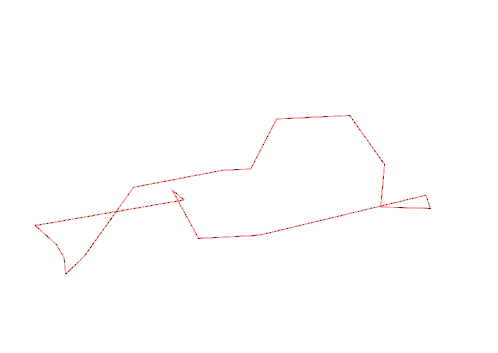
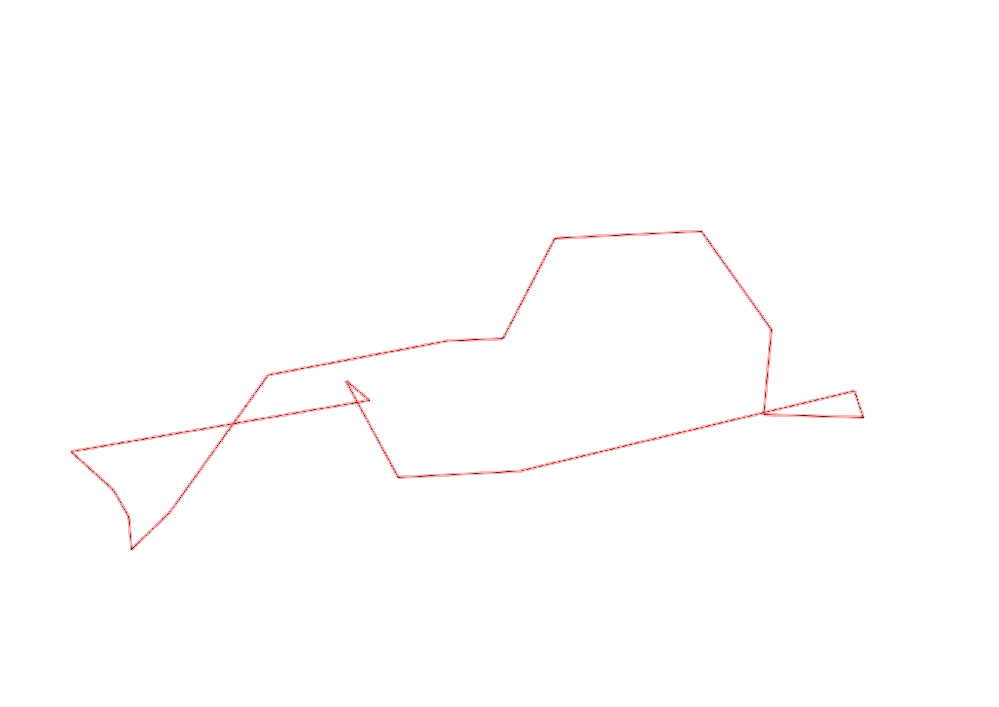

| Control |
Points |
Time Punched |
Distance |
Your Time |
Pace |
Place |
Fastest Time |
Median Time |
% Behind Fastest |
| 42 |
40 |
|
0.23 |
0:01:59 |
08:37 |
1 / 2 |
0:01:59 |
0:02:05 |
0% |
| 37 |
30 |
|
0.26 |
0:04:01 |
15:26 |
6 / 9 |
0:02:45 |
0:03:57 |
46% |
| 56 |
50 |
|
0.73 |
0:07:30 |
10:16 |
1 / 1 |
0:07:30 |
0:07:30 |
0% |
| 75 |
70 |
|
0.06 |
0:00:57 |
15:50 |
3 / 4 |
0:00:30 |
0:00:48 |
90% |
| 46 |
40 |
|
0.21 |
0:02:11 |
10:23 |
3 / 4 |
0:01:20 |
0:01:53 |
63% |
| 52 |
50 |
|
0.18 |
0:01:56 |
10:44 |
1 / 3 |
0:01:56 |
0:02:14 |
0% |
| 109 |
100 |
|
0.26 |
0:03:08 |
12:03 |
6 / 9 |
0:01:20 |
0:02:00 |
135% |
| 123 |
20 |
|
0.31 |
0:03:00 |
09:40 |
6 / 10 |
0:01:36 |
0:02:50 |
87% |
| 47 |
40 |
|
0.24 |
0:06:58 |
29:01 |
6 / 6 |
0:02:32 |
0:03:41 |
175% |
| 92 |
90 |
|
0.12 |
0:05:19 |
44:18 |
10 / 10 |
0:01:21 |
0:03:13 |
293% |
| 126 |
20 |
|
0.39 |
0:04:00 |
10:15 |
2 / 3 |
-1 day, 23:15:07 |
0:04:00 |
-99% |
| 41 |
40 |
|
0.36 |
0:02:56 |
08:08 |
1 / 1 |
0:02:56 |
0:02:56 |
0% |
| 40 |
40 |
|
0.11 |
0:01:42 |
15:27 |
21 / 24 |
0:00:45 |
0:01:00 |
126% |
| 71 |
70 |
|
0.07 |
0:01:13 |
17:22 |
8 / 12 |
0:00:34 |
0:01:00 |
114% |
| 69 |
60 |
|
0.06 |
0:02:03 |
34:10 |
5 / 5 |
0:01:13 |
0:01:26 |
68% |
| 53 |
50 |
|
0.12 |
0:02:03 |
17:05 |
19 / 26 |
0:01:16 |
0:01:51 |
61% |
| 127 |
20 |
|
0.64 |
0:06:18 |
09:50 |
1 / 1 |
0:06:18 |
0:06:18 |
0% |
| Finish |
0 |
|
0.06 |
0:00:35 |
09:43 |
4 / 8 |
-1 day, 23:05:57 |
0:00:35 |
-99% |
Total Distance Covered: 4.41km
Points Scored: 830
Late Penalty: 0
Final Score: 830
Total Time: 0hours 57minutes 49seconds
Efficiency: 188.21 points/km
 
